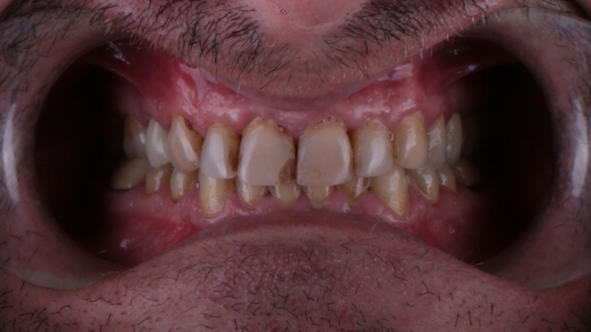
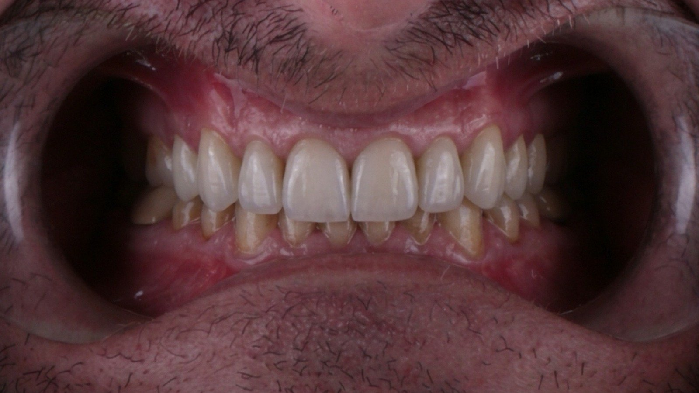
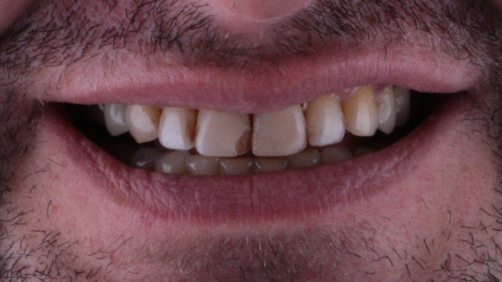
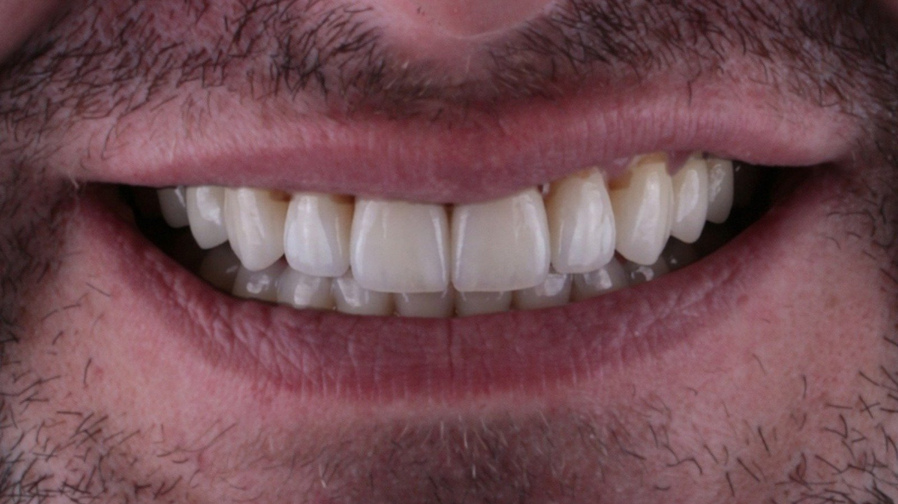

Measurement
From two photos, tooth proportion, midline, incisal display and gingival line are measured automatically.
Digital smile design for aesthetic cases
For dentists and digital labs. Send two photos of your case; we prepare form recommendations, a guide-lined digital preview and an ExoCAD work package for you. Your first case is free of charge.
Five steps. What we need from you: photos, a choice and an approval.
You take two photos and e-mail them: a full-face smile shot and a retracted shot. A phone camera is enough.
Tooth proportions, midline, incisal edge and gingival line are measured from the photos.
You receive a list of forms. You pick one or tell us the line you want.
A guide-lined preview is prepared with your chosen form; you compare before/after with the slider.
The design you approve becomes an ExoCAD work package.

BEFORE
AFTER
BEFORE
AFTEROnce you send a case, most of the work is done by the studio's automation; you only review and approve the result.
From two photos, tooth proportion, midline, incisal display and gingival line are measured automatically.
Based on the measurements and facial proportions, 5 primary and 3 alternative forms are ranked from a library of 441, each with its rationale.
The chosen form is fitted onto the patient's photo with guide lines; tooth count and contour must pass a mechanical gate before anything is sent to you.
You review the preview on a single screen, approve or request a change; after approval the ExoCAD work package is prepared.
Limit: Atlas does not diagnose, prescribe treatment or promise clinical outcomes; the decision is the dentist's.
The studio's agent layout, measurement loop and method notes: background of the service, not needed to send a case.
Two shots: a full-face smile shot and a retracted shot, in daylight or flat light. A phone camera is enough. You can add an intraoral scan if you have one. Obtain patient consent before sending, and keep patient identity out of file names.
5 primary and 3 alternative form suggestions, each with a short reason; a guide-lined before/after preview with your chosen form (single file); after your approval, an ExoCAD work package.
Yes. Form recommendations and the preview reach you without ExoCAD. An ExoCAD work package is prepared only if you move on to the arrangement step.
Photos are processed and stored on the studio's own devices and never handed to third parties. For the preview, only an identity-free mouth crop goes to the cloud image model; no face, name or file name. Write to us whenever you want them deleted. Details: Privacy and data note.
E-mail your case; turnaround and terms are given in our reply. Your first case is free of charge. We don't sell software; we provide a service.
Two photos are enough. Your first case is free of charge.
A full-face smile shot and a retracted shot, in daylight or flat light. An intraoral scan if you have one. Obtain patient consent before sending.
Form recommendations and a guide-lined before/after preview; after approval, an ExoCAD work package. Turnaround and terms are given in our reply to your case.
More: Türkçe